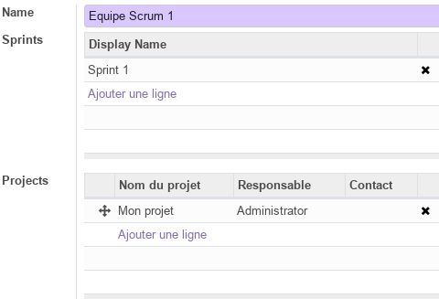

Module Projet Scrum¶
Ce document illustre les différentes fonctionnalités du module additionnel Projet Scrum d’odoo 13 community.
Présentation du module¶
Ce module additionnel au Module Projet, est destiné à la gestion de projet agiles avec la méthode Scrum. Il permet :
de gérer les Sprints et d’associer des équipes scrum à des projets.
d’associer les taches à des Sprints afin de faciliter leur suivi.
Configuration (admin)¶
Sprints¶
Cette section permet de prédéfinir les informations essentielles des Sprints dans les quelles s’exécutes les taches en cours.

Scrum Teams¶
Cette section permet de prédéfinir les informations essentielles relatives aux Equipes Scrum impliquées dans la réalisation des taches du projet.

Tâches¶
Ce module ajoute de nouvelles fonctionnalités au module projet, notamment aux Tâches, qui dipose ainsi de nouveau paramètres permettant de les liées aux Sprints.